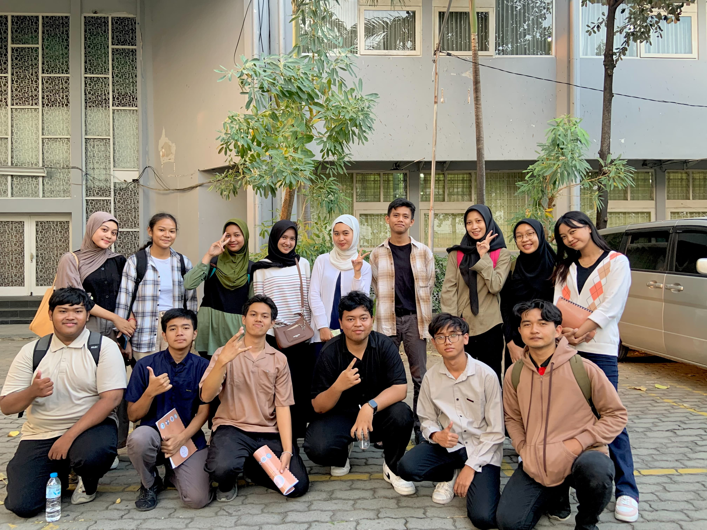
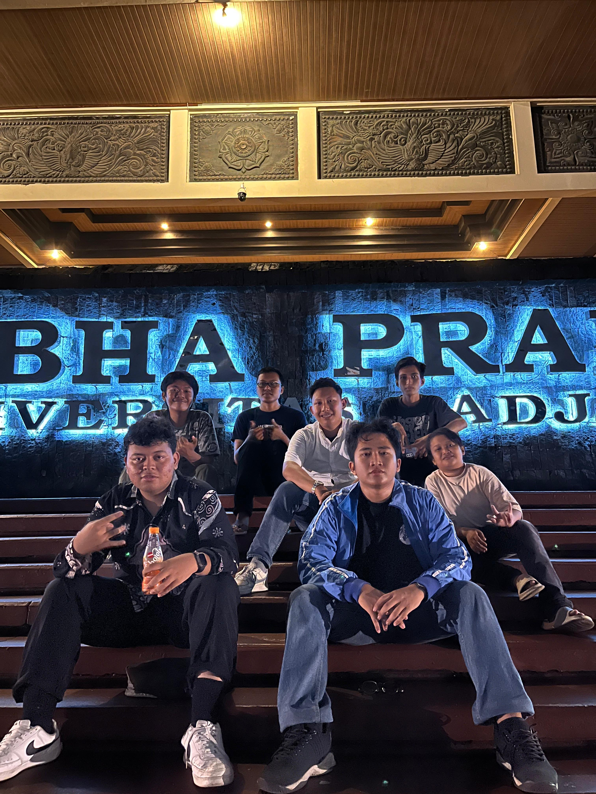

About Me
Get to know more about my background, interests, and aspirations
Biography

Junior-year Informatic Engineering student at Universitas Airlangga with a strong multidisciplinary focus on technology, design, and strategic communication.
My core strength lies in bridging the gap between technical functionality and user experience. I develop user-centered solutions, demonstrated through projects like the AS Cafe Management System and the InHealth AI Diagnosis Platform's UI/UX. I am proficient in Flutter and JavaScript for development, and deeply passionate about UI/UX Design and Visual Communication.
Beyond code, I possess proven soft skills in Leadership, Project Coordination, and Research-based Writing. As a Freelance Writer for Kompasiana, I leverage analytical skills to articulate complex issues, and I have successfully led organizational logistics and HR development initiatives. Seeking opportunities to leverage technical proficiency and design thinking to create impactful, well-executed digital products.
🎓 Major
Informatics Engineering
Faculty of Vocational
💡 Interests
- Research & Innovation
- Technology & Digital Solutions
- Community Development
- Creative Problem Solving
🎯 Goals
- Excel in academic pursuits
- Develop professional expertise
- Contribute to meaningful projects
- Build a strong professional network
Moments & Memories



